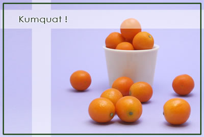
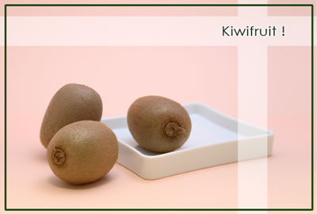

フルーツ Fruits Information
01.キンカン

商品情報
中国が主な原産地ですが、日本では宮崎県での栽培が有名です。みかんなどと違い、皮ごとたべます。果肉もさることながら、皮が柔らかく、苦味と甘味がありデザートなどに最適です。

02.キウイフルーツ

商品情報
国産のキウイは冬から春にかけて収穫されます。鮮やかな緑色の果実は、主に生食が中心で、フルーツとしてまたサラダとして重宝されます。また食物繊維が豊富なので、整腸作用があります。
フルーツアンドベジタブル株式会社
Copyright Fruit and Vegetable Corporation. All rights reserved.